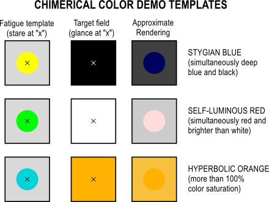

Chimerical Colors
A chimerical color is an imaginary color that can be seen temporarily by looking steadily at a strong color until some of the cone cells become atigued, temporarily changing their color sensitivities, and then looking at a markedly different color. The direct trichromatic description of vision cannot explain these colors, which can involve saturation signals outside the physical gamut imposed by the trichromatic model. Opponent process color theories, which treat intensity and chroma as separate visual signals, provide a biophysical explanation of these chimerical colors.[4] For example, staring at a saturated primary-color field and then looking at a white object results in an opposing shift in hue, causing an afterimage of the complementary color. Exploration of the color space outside the range of "real colors" by this means is major corroborating evidence for the opponent-process theory of color vision. Chimerical colors can be seen while seeing with one eye or with both eyes, and are not observed to reproduce simultaneously qualities of opposing colors (e.g. "yellowish blue").[4] Chimerical colors include:
Stygian Colors
These are simultaneously dark and impossibly saturated. For example, to see "stygian blue": staring at bright yellow causes a dark blue afterimage, then on looking at black, the blue is seen as blue against the black, also as dark as the black. The color is not possible to achieve through normal vision, because the lack of i ncident light (in the black) prevents saturation of the blue/yellow chromatic signal (the blue appearance).
Self-luminous Colors
These mimic the effect of glowing material, even when viewed on a medium such as paper, which can only reflect and not emit its own light. For example, to see "self-luminous red": staring at green causes a red afterimage, then on looking at white, the red is seen against the white and may seem to be brighter than the white.
Hyperbolic Colors
These are impossibly highly saturated. For example, to see "hyperbolic orange": staring at bright cyan causes an orange afterimage, then on looking at orange, the resulting orange afterimage seen against the orange background may cause an orange color purer than the purest orange color that can be made by any normally-seen light.
Colors outside physical color space
According to the opponent-process theory, under normal circumstances, there is no hue that could be described as a mixture of opponent hues; that is, as a hue looking "redgreen" or "yellowblue".
Neuron Fatigue
In 1983, Hewitt D. Crane and Thomas P. Piantanida performed tests using an eye-tracker device that had a field of a vertical red stripe adjacent to a vertical green stripe, or several narrow alternating red and green stripes (or in some cases, yellow and blue instead). The device could track involuntary movements of one eye (there was a patch over the other eye) and adjust mirrors so the image would follow the eye and the boundaries of the stripes were always on the same places on the eye's retina; the field outside the stripes was blanked with occluders. Under such conditions, the edges between the stripes seemed to disappear (perhaps due to edge-detecting neurons becoming fatigued) and the colors flowed into each other in the brain's visual cortex, overriding the opponency mechanisms and producing not the color expected from mixing paints or from mixing lights on a screen, but new colors entirely, which are not in the CIE 1931 color space, either in its real part or in its imaginary parts. For red-and-green, some saw an even field of the new color; some saw a regular pattern of just-visible green dots and red dots; some saw islands of one color on a background of the other color. Some of the volunteers for the experiment reported that afterward, they could still imagine the new colors for a period of time.[5]
Some observers indicated that although they were aware that what they were viewing was a color (that is, the field was not achromatic), they were unable to name or describe the color. One of these observers was an artist with large color vocabulary. Other observers of the novel hues described the first stimulus as a reddish- green.[6]